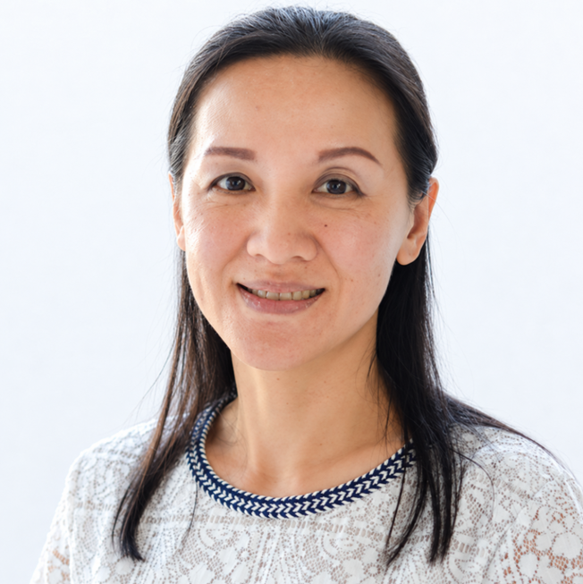
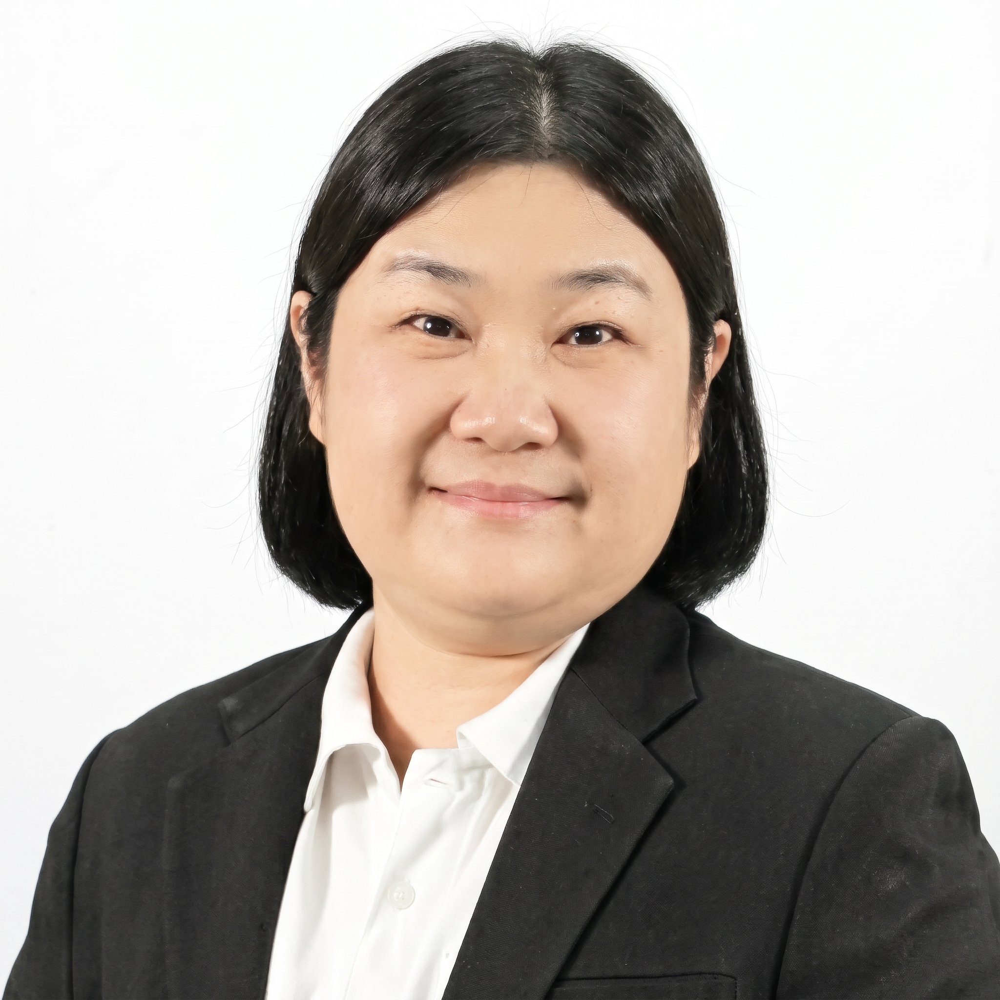
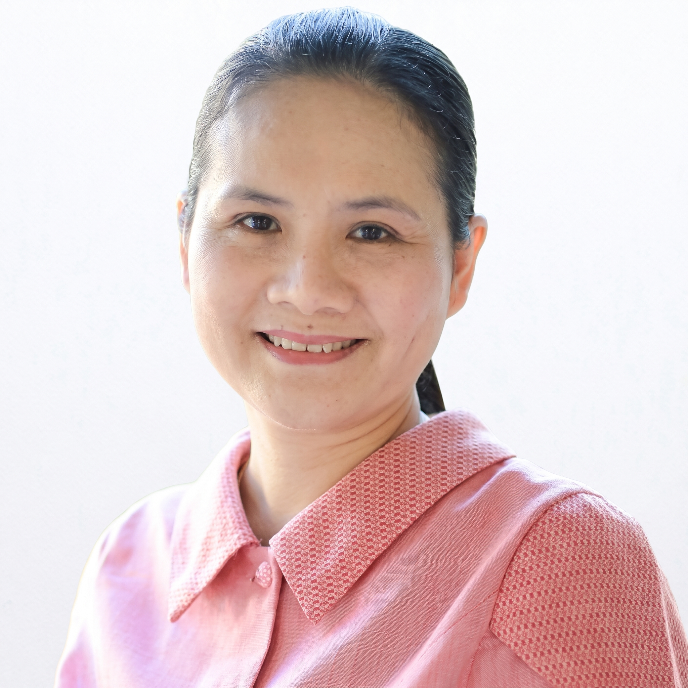
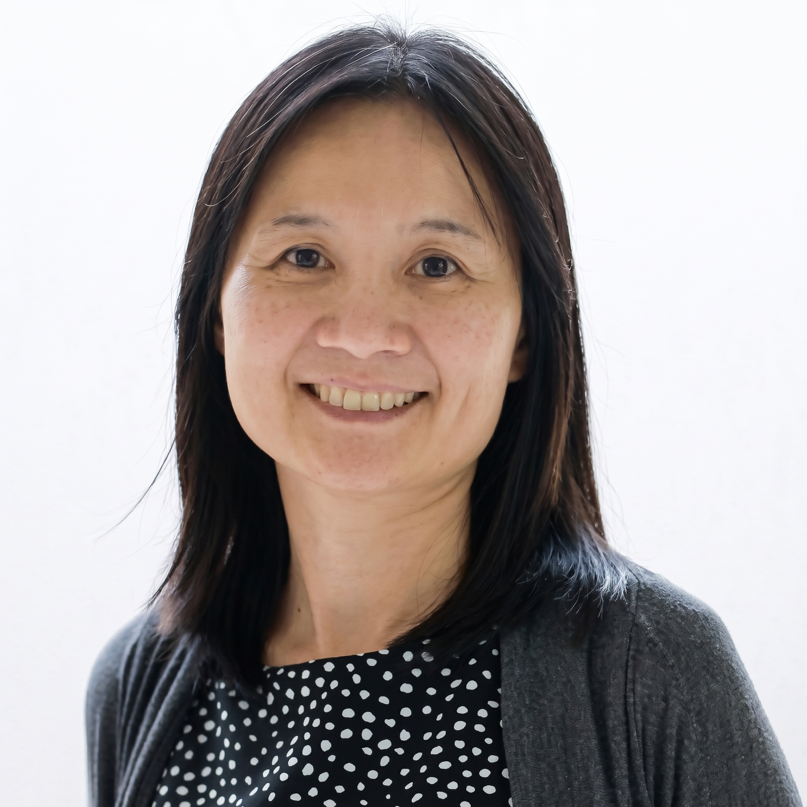
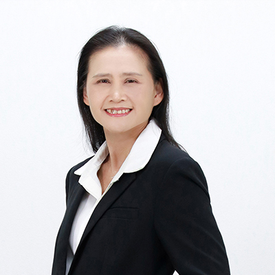
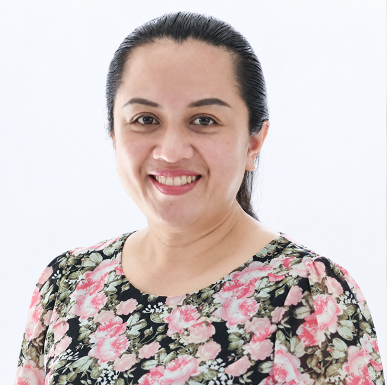

แบบ 1.1
ผู้สำเร็จการศึกษาปริญญาโท
48หน่วยกิต
จำนวนหน่วยกิตรวม
- รายวิชาบังคับ-หน่วยกิต
- รายวิชาเลือก-หน่วยกิต
- วิทยานิพนธ์48หน่วยกิต
ค่าธรรมเนียมตลอดหลักสูตร (บาท)495,000
ก้าวสู่การเป็นผู้นำและนักวิจัยทางการพยาบาลระดับโลก
ผู้สำเร็จการศึกษาปริญญาโท
48หน่วยกิต
จำนวนหน่วยกิตรวม
ผู้สำเร็จการศึกษาปริญญาโท
56หน่วยกิต
จำนวนหน่วยกิตรวม
ผู้สำเร็จการศึกษาปริญญาตรี
73หน่วยกิต
จำนวนหน่วยกิตรวม
หมายเหตุ: นักศึกษาต่างชาติจะมีค่าธรรมเนียมชาวต่างชาติเพิ่มเติม ภาคการศึกษาละ 20,000 บาท
| ลำดับ | แผนการศึกษา | ค่าธรรมเนียมตลอดหลักสูตร | จำนวนภาคการศึกษาปกติ | ค่าธรรมเนียมต่อภาคการศึกษาปกติ |
|---|---|---|---|---|
| 1. | แผน 1.1 และ 2.1 | 495,000 | 6 | 82,500 |
| 2. | แผน 2.2 | 825,000 | 10 | 82,500 |
Qualifications and Application
ต้องสำเร็จการศึกษาระดับปริญญาโท สาขาวิชาพยาบาลศาสตร์ จากสถาบันการศึกษาที่ได้รับการรับรองจากสภาการพยาบาล และได้รับใบอนุญาตประกอบวิชาชีพการพยาบาลและการผดุงครรภ์ ชั้นหนึ่ง หรือการพยาบาลการผดุงครรภ์ จากสภาการพยาบาล
ต้องสำเร็จการศึกษาระดับปริญญาโท สาขาวิชาพยาบาลศาสตร์ หรือเทียบเท่า และได้รับใบอนุญาตประกอบวิชาชีพการพยาบาลจากองค์กรหรือสภาวิชาชีพที่รับผิดชอบในประเทศของผู้สมัคร ในกรณีที่ประเทศนั้นๆ ไม่มีระบบใบอนุญาตประกอบวิชาชีพ ต้องมีหนังสือรับรองการขึ้นทะเบียน หรือหนังสือรับรองจากองค์กรกำกับดูแลวิชาชีพการพยาบาล (Nursing Regulatory Authority) ของประเทศผู้สมัคร
เป็นไปตามประกาศของบัณฑิตวิทยาลัย มหาวิทยาลัยเชียงใหม่ ดังนี้: TOEFL คะแนนไม่น้อยกว่า 430 (Paper-based), 117 (Computer-based) หรือ 39 (Internet-based) หรือ IELTS Band ไม่น้อยกว่า 4.0 หรือ CMU-eTEGS 40, CU-TEP 40%, TU-GET 40%, KU-EPT 40%, DynEd 0.5 (CEFR = A1), CMU e-Grad 50%
ให้อยู่ในดุลพินิจของคณะกรรมการบริหารหลักสูตร คณะพยาบาลศาสตร์ มหาวิทยาลัยเชียงใหม่
ต้องสำเร็จการศึกษาระดับปริญญาตรี สาขาวิชาพยาบาลศาสตร์ จากสถาบันการศึกษาที่ได้รับการรับรองจากสภาการพยาบาล และได้รับใบอนุญาตประกอบวิชาชีพการพยาบาลและการผดุงครรภ์ ชั้นหนึ่ง หรือการพยาบาลการผดุงครรภ์ จากสภาการพยาบาล
ต้องสำเร็จการศึกษาระดับปริญญาตรี สาขาวิชาพยาบาลศาสตร์ หรือเทียบเท่า และได้รับใบอนุญาตประกอบวิชาชีพการพยาบาลจากองค์กรหรือสภาวิชาชีพที่รับผิดชอบในประเทศของผู้สมัคร ในกรณีที่ประเทศนั้นๆ ไม่มีระบบใบอนุญาตประกอบวิชาชีพ ต้องมีหนังสือรับรองการขึ้นทะเบียน หรือหนังสือรับรองจากองค์กรกำกับดูแลวิชาชีพการพยาบาล (Nursing Regulatory Authority) ของประเทศผู้สมัคร
เป็นไปตามประกาศของบัณฑิตวิทยาลัย มหาวิทยาลัยเชียงใหม่ ดังนี้: TOEFL คะแนนไม่น้อยกว่า 430 (Paper-based), 117 (Computer-based) หรือ 39 (Internet-based) หรือ IELTS Band ไม่น้อยกว่า 4.0 หรือ CMU-eTEGS 40, CU-TEP 40%, TU-GET 40%, KU-EPT 40%, DynEd 0.5 (CEFR = A1), CMU e-Grad 50%
ให้อยู่ในดุลพินิจของคณะกรรมการบริหารหลักสูตร คณะพยาบาลศาสตร์ มหาวิทยาลัยเชียงใหม่
สำเนาบัตรประจำตัวประชาชน (สำหรับผู้สมัครสัญชาติไทย) หรือ สำเนาหนังสือเดินทาง (Passport) (สำหรับผู้สมัครชาวต่างชาติ)
สำเนาทะเบียนบ้าน (สำหรับผู้สมัครสัญชาติไทย)
รูปถ่ายหน้าตรง (ไม่สวมหมวก ไม่สวมแว่นตากันแดด และไม่สวมหน้ากากอนามัย)
สำเนาใบปริญญาบัตร หรือหนังสือรับรองคุณวุฒิ(ต้องเป็นฉบับภาษาอังกฤษเท่านั้น กรณีเอกสารต้นฉบับเป็นภาษาอื่น ต้องผ่านการแปลภาษาอังกฤษโดยศูนย์/บริษัทรับแปลภาษาที่ได้รับการจดทะเบียน พร้อมประทับตรารับรองความถูกต้อง)
สำเนาใบอนุญาตประกอบวิชาชีพการพยาบาลและการผดุงครรภ์
สำเนาใบรายงานผลการศึกษา (Transcript) ฉบับสมบูรณ์(ต้องเป็นฉบับภาษาอังกฤษเท่านั้น กรณีเอกสารต้นฉบับเป็นภาษาอื่น ต้องผ่านการแปลภาษาอังกฤษโดยศูนย์/บริษัทรับแปลภาษาที่ได้รับการจดทะเบียน พร้อมประทับตรารับรองความถูกต้อง)
สำเนาผลการทดสอบความรู้ความสามารถทางภาษาอังกฤษ
หนังสืออนุมัติ/หนังสือยินยอมให้ลาศึกษาต่อจากผู้บังคับบัญชาผู้มีอำนาจ
เค้าโครงข้อเสนอหัวข้อวิทยานิพนธ์ (Thesis Proposal Outline) ที่สนใจจัดทำ
สอบคัดเลือกโดยการสัมภาษณ์ผ่านระบบ Zoom
รายละเอียดการรับสมัคร
สมัครเข้าศึกษาผ่านระบบของมหาวิทยาลัยเชียงใหม่
admission.reg.cmu.ac.thรองศาสตราจารย์ ดร.
ฐิติณัฏฐ์ อัคคะเดชอนันต์
ประธานกรรมการ
ผู้ช่วยศาสตราจารย์ ดร.
อรอนงค์ วิชัยคำ
รองประธานกรรมการ
ศาสตราจารย์ ดร.
ภัทราภรณ์ ภทรสกุล
กรรมการ

รองศาสตราจารย์ ดร.
วีระพร ศุทธากรณ์
กรรมการ

รองศาสตราจารย์ ดร.
จิราภรณ์ เตชะอุดมเดช
กรรมการ
ผู้ช่วยศาสตราจารย์ ดร.
ศรีมนา นิยมค้า
กรรมการ

รองศาสตราจารย์ ดร.
นงค์คราญ วิเศษกุล
กรรมการ
ผู้ช่วยศาสตราจารย์ ดร.
ธานี แก้วธรรมานุกูล
กรรมการ

ผู้ช่วยศาสตราจารย์ ดร.
กาญจนา ธานะ
กรรมการ

อาจารย์ ดร.
นงลักษณ์ เฉลิมสุข
กรรมการ
ผู้ช่วยศาสตราจารย์ ดร.
ศิริรัตน์ วิชิตตระกูลถาวร
เลขานุการ

ผู้ช่วยศาสตราจารย์ ดร.
พจนีย์ ขวัญเงิน
ผู้ช่วยเลขานุการ
อาจารย์ ดร.
ปิยวรรณ ศรีตะวรรณ
ผู้ช่วยเลขานุการ
ประกอบด้วย
ครอบคลุมค่าใช้จ่ายทั้งหมด ได้แก่ ค่าธรรมเนียมการศึกษา ประกันชีวิต อุปกรณ์การเรียน เงินสนับสนุนค่าครองชีพรายเดือน ที่พัก ค่าเดินทาง ค่าใช้จ่ายในการทำวิทยานิพนธ์/ดุษฎีนิพนธ์ และค่าตั๋วเครื่องบิน
เงินสนับสนุนรายเดือนสูงสุด 9,000 บาท
เป็นผู้ผ่านการคัดเลือกเข้าศึกษาระดับบัณฑิตศึกษา ในหลักสูตรภาคปกติหรือภาคพิเศษที่มีการทำวิทยานิพนธ์ ที่มี GPA ตามเงื่อนไขทุน และ ได้รับอนุมัติหัวข้อและโครงร่างวิทยานิพนธ์ภายในระยะเวลาที่กำหนด (ภายใน 2 ภาคการศึกษาปกติสำหรับนักศึกษาปริญญาโท และภายใน 3 ภาคการศึกษาปกติสำหรับนักศึกษาปริญญาเอก นับจากวันที่ลงทะเบียนเรียน)